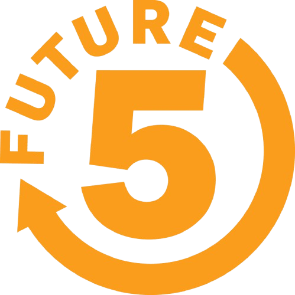

About Me
I'm from Stamford, CT, and currently enrolled at Rochester Institute of Technology (Class of 2030+1). I graduated from the Academy of Information Technology & Engineering in 2026 with a focus in Computer Science, and completed dual enrollment at CT State Community College with a math focus.
Leadership & Experience
- Future 5 — Program Development Intern (May–June 2026): Developed and revised a parent engagement program outline, incorporating supervisor feedback and proofreading for clarity, grammar, and accuracy.
- Synchrony Skills Academy CS Program — Project Leader (June 2024–June 2026): Led a small team through coding projects, assigned tasks, and coordinated with teammates and mentors to meet deadlines.
- Mayor's Youth Leadership Council — Community Advisor (September 2023–June 2026): Helped plan and run community events on mental health and youth advocacy across local schools.
- AITE Student Council — President (November 2022–November 2023): Founded an annual school-wide Community Day and led initiatives promoting inclusion.
- AITE Debate Team — Varsity Debater & Novice Mentor (September 2022–June 2026): Competed in national and international tournaments and mentored newer members in preparation and public speaking.
- AITE — Teacher Aide / Volunteer (August 2024–June 2025): Tutored classmates in math, finance, and writing, and supported teachers with classroom tasks and materials.
- Ferguson Library — Children's Program Volunteer (June–August 2024): Ran youth reading programs and events, working with library staff and visiting families in a busy walk-in environment.
Skills
- Programming & Web Development: Python, JavaScript, React, Three.js
- AI: AI prompt engineering
- Professional: Customer service, organization, time management, attention to detail, teamwork, reliability, Microsoft Office
Research Highlights
My independent research portfolio compiles ten investigations exploring Quantum Computing, AI Ethics, Biotechnology, and philosophical intersections between technology and humanity.
📘 Download Full Research Portfolio (PDF)Quantum Computing
How qubits, superposition, and entanglement redefine computation limits and scientific simulation.
AI Ethics
Examining fairness, accountability, and the social consequences of algorithmic design.
Biotechnology
Understanding CRISPR, mRNA, and computational design as engines of modern medicine.
Philosophy & Leadership
Exploring bias, emotional intelligence, and the balance between objectivity and meaning.
Achievements
- Featured in Stamford Magazine: 10 Teens to Watch (September 2025) for leadership and community involvement.
- Recognized as a top speaker in regional debate competitions.
Contact
Email: srob@future5student.org
GitHub: github.com/sazidrob
Impact & Involvement
Varsity Debater & Novice Mentor
AITE Debate Team
Competed in national and international tournaments and mentored newer members in preparation and public speaking.
Dates: September 2022–June 2026
Project Leader
Synchrony Skills Academy CS Program
Led a small coding-project team, assigned tasks, and coordinated with teammates and mentors to meet deadlines.
Dates: June 2024–June 2026
Community Advisor
Mayor's Youth Leadership Council
Helped plan and run community events on mental health and youth advocacy across local schools.
Dates: September 2023–June 2026
Student Council President
AITE
Founded an annual school-wide Community Day event and led initiatives promoting inclusion across the student body.
Dates: November 2022–November 2023
Program Development Intern
Future 5
Developed a parent engagement program outline, presented drafts and a final version, and revised content with supervisor feedback.
Dates: May–June 2026
Teacher Aide / Volunteer
AITE
Tutored classmates in math, finance, and writing, supported classroom tasks, and kept materials organized.
Dates: August 2024–June 2025
Children's Program Volunteer
Ferguson Library
Ran youth reading programs and public events, working with library staff and visiting families in a busy walk-in environment.
Dates: June–August 2024
Tennis Mentor
Norwalk/Stamford Grassroots Tennis & Education
Coached younger players as an aide and participated in athletic + academic enrichment programs year-round.
Grades: 9–12 | ~6 hr/wk
Independent Researcher
AI, Biotech, Quantum Computing, etc
Researched advanced tech fields; documented experiments and reflections on this personal site.
Grades: 9–PG | ~1 hr/wk

Future Five Member
Community & Mentorship
Mentored peers, volunteered in events, and collaborated with mentors in Stamford’s Future Five program.
Grades: 10–PG | ~8 hr/wk
Youth Business Fair Mentor
Ferguson Library & AITE
Guided and mentored children in a youth entrepreneur fair, helping them grasp essential life skills such as financial literacy, communication, negotiation, and marketing. Encouraged creative thinking and confidence through real-world practice.
Grades: 10–12 | October 2024
My Coding Projects
- This Website!: Built with Three.js to create this interactive experience showcasing my work!
- IP Finder: A Python script that retrieves the IP address of the user's device.
- Tic Tac Toe – Turtle-based Game: Built a Python Tic-Tac-Toe game using the Turtle library.
- A simple, GUI-based Python calculator without the usual interface!